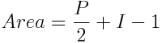

Pick's Theorem
Pick's theorem [Crilly, p113][Stewart, p125] is a formula for calculating the area of a polygon, which is drawn on a grid. It is remarkably simple:

Here, P is the number of points on the perimeter and I is the number of points on the interior. The theorem was proved by Georg Pick in 1899. It works for any shape which joins discrete points with whole number coordinates, and where the boundary does not cross itself.
So for the following polygon, Area = (15/2) + 4 -1 = 10.5.
It's a great formula for a person to use. You can easily count the points on the perimeter and in the interior. But don't get too excited about it's application in computing; working out which points are on the interior is not a trivial problem for a computer to solve [Sedgewick, p353].